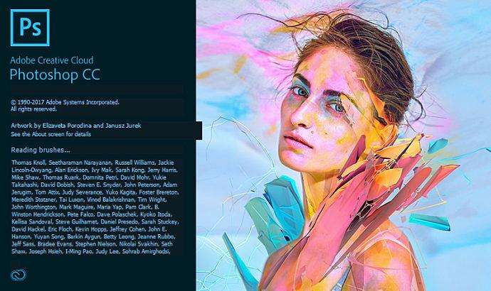
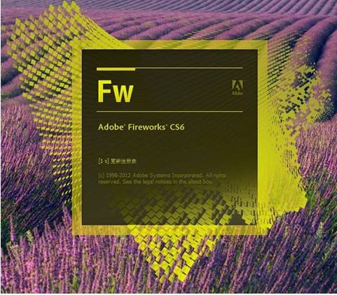

网页设计软件列表（单击查看）
- 
- Photoshop一款超S级设计神器！给画面来点动感吧。
- Photoshop处理以像素构成的图像，可以有效地进行图片编辑调整工作。
- Photoshop有很多功能，在图像、图形、文字、出版等各方面都有涉及。
- 在制作建筑效果图包括许多三维场景时，常常需要在Photoshop进行调整

- Illustrator是一种应用于出版、多媒体和在线图像的标准矢量插画的软件
- Illustrator广泛应用于印刷出版、海报书籍、专业插画、多媒体图像处理
- Illustrator可以为线稿提供较高的精度和控制，简单到复杂项目都能生产
- Dreamweaver是第一套针对专业网页设计师特别发展的网页开发工具
- 利用它可以轻易地制作出跨越平台和跨越浏览器限制的充满动感的网页
- Dreamweaver自MX版本开始，使用了Opera的排版引擎作为网页预览
- Dreamweaver可以在AdobeCreativeSuite4的不同组件之间切换工作
- 
- Fireworks是Adobe推出的一款网页作图软件，可以加速Web设计开发
- Fireworks是一款创建优化Web图像和快速构建网站与Web界面的工具